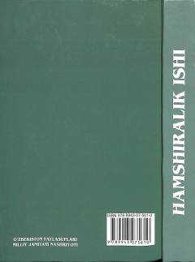

HIOliy hamshiralik ishi talabalari uchun mo'ljallangan rasmiy darslik.
Ushbu darslik Oliy o'quv yurtlarining Oliy hamshiralik ishi yo'nalishi talabalari uchun Oliy va o'rta maxsus ta'lim vazirligi tomonidan tavsiya etilgan. Kitobda hamshiralik ishining asosiy nazariy va amaliy masalalari yoritib berilgan.